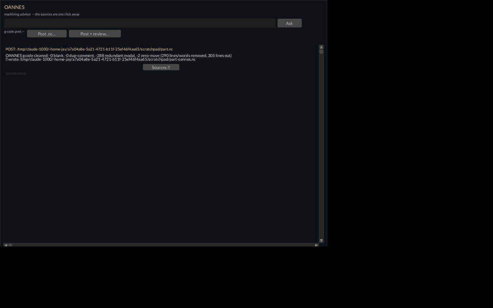

OANNES
Oannes: the Babylonian apkallu — the fish-cloaked sage who rose from the water to teach humanity the crafts, then went back in the evening. Knowledge from the deep, handed over and left with you. Advisor, never a tutor.
The shop advisor. Grounded answers, honest G-code post.

Oannes — Operator Manual
Shop advisor + G-code post. Leviathan Design Suite. Sovereign, local-first, PolyForm Small Business licensed.
Quickstart
Ask a shop question:
./oannes "how do I probe a bore with a Renishaw cycle"
./oannes # no args: prompts for the questionPost-process a G-code file:
./oannes gcode in.nc -o out.nc # deterministic clean
./oannes gcode in.nc -o out.nc --precision 4
./oannes gcode in.nc --review # + model advisory to stdoutOr the window: oannes-win (cargo feature
win) — ask box on top, a g-code post row
under it (Post .nc… = deterministic clean;
Post + review… adds the Nemotron advisory, which takes the
Styx lease), session scrollback below, "Sources ▸/▾" toggle per
answer.
What it is
A grounded advisor. Every answer is composed from a local corpus of
CNC curriculum (corpus/ — Fanuc, Okuma OSP, Renishaw
probing, mill/lathe fundamentals) and cites which file and which heading
grounded it. No corpus hit, it says so — the persona prompts forbid
invented G-codes and macro numbers. Plus a G-code post-processor
(tools/gcode.py): a deterministic cleanup pass that always
runs, and an opt-in advisory review that is printed, never applied.
Features
Advisor (tools/oannes_engine.py):
- Grep-style retrieval over markdown chunks split at
##/###headings; G-code-shaped tokens (G01, M03, T0101, #100, O9810) kept intact in scoring. - Citations per answer:
sourcefile,heading,score,line_start. - Three personas:
expert(working code, cited),mentor(no code, Socratic — apprentice tier),setup(code plus a setup-machinist verification checklist).--personaflag orCNC_PERSONAenv. --jsonfor machine callers;--serve --port 8083HTTP mode:GET /health,POST /ask{query, top_k?, model?, persona?}.- Corpus override:
--corpus DIR, orCNC_CORPUS_ROOT+ colon-separatedCNC_CORPUS_ROOTS_EXT.
G-code post (tools/gcode.py, descended
from Anzu — folded in and shelved 2026-08-13):
gcode.py INPUT [-o OUT] [--precision N] [--review]— that is the whole flag set. No-oprints cleaned code to stdout, report to stderr.- Deterministic clean: strips blanks and duplicate consecutive
comments, collapses redundant modal F/S, drops zero-length moves,
normalizes decimals to
--precision(default 3). Prints a per-rule removal count. - Only plain G0/G1 lines carrying nothing but G/X/Y/Z/E/F/S are rebuilt; anything else (arcs, cycles, lines with N/T/D/H/P words) passes through unchanged.
--review: whole program to the model, plain-English bullets on safety, feeds, wasted rapids. Advisory only — the motion is never rewritten.
Using it
- Question from the shell:
./oannes "...". The wrapper takes the GPU lease (flock /tmp/xos_gpu_lock.json) around the generation call, so it waits its turn instead of colliding with a resident model. Cold model means ~60s before the answer lands; the answer arrives all at once. - Window post lane:
Post .nc…picks a file (zenity), writes<stem>-oannes.ncbeside it, and logs the removal report in the session scrollback; the entry's Sources toggle holds the head of the cleaned file.OANNES_OPEN=<path> oannes-winposts a file at startup (headless testing). - Window: type the question, Enter. Each entry shows the clean answer; flip "Sources ▸" open to audit which corpus file and heading it stands on.
- Post a file:
./oannes gcode part.nc -o part-clean.nc. Read the report line. Diff it. The clean is reversible only by re-running the source — keep the input. --reviewon real work: treat it like a second set of eyes at the fence, not a sign-off. It sees at most the first 12,000 characters.
How it connects
- Generation runs on the GPU host: the engine defaults to the nemotron
shim at
:18205(CNC_NEMOTRON_SHIM_BASE); Devstral is proven for the G-code review lane, nemotron holds the advisor feeds/speeds lane. Residency is the HADES keeper's business — last-loaded model stays warm. - All GPU calls go through the Styx lease:
flockon/tmp/xos_gpu_lock.json(the CLI, the window's worker thread, andgcode --reviewall take it; deterministic clean is offline and does not). - Feeds from the suite: Hephaestus (CAM) and Iris (laser/plasma) emit the G-code Oannes posts and reviews.
- Kish is the library sibling — documents and notebooks live there; Oannes answers from its own corpus.
Known limits
Read this section before trusting output. These are open, not theoretical.
- Advisor outage looks like an answer. If the model
endpoint is down or errors, the engine returns the error text —
(nemotron-shim HTTP 500: ...)or(URLError: ...)— in theanswerfield, with citations attached as if it were real. The window and CLI print it like any answer. Fail-loud fix is queued; until then, an "answer" in parentheses that reads like an exception IS an exception. This is why the AI claim is off the public page. - clean() can delete real moves. It tracks position
assuming absolute (G90) coordinates only. In G91
incremental mode, a repeated move (
G1 X5twice) looks like a zero-length move and gets dropped — a real cut, silently gone. A bareG28/G30(home, no axis words) also leaves stale position behind. Do not run incremental programs through clean(). - Arc/modal handling is the historic bug class. Anzu's clean() carried stale position across G2/G3 and dropped N/T/D/H/P words from rebuilt lines; guards now pass those lines through untouched and invalidate position, and the precision-0 rstrip bug is patched — but the guards are recent and un-audited (Tier-1 review open). Eyeball the diff on anything that runs on a machine.
- Modal F/S collapse compares strings:
F100vsF100.0count as a change, not a duplicate. Cosmetic, not dangerous. --reviewsilently truncates past 12,000 characters and swallows its own transport errors as(review unavailable: ...).
Queued
- Token streaming — the answer lands whole; no progress during inference.
- Source line-jump —
scoreandline_startare in the JSON, not surfaced in the window. - Re-ask / edit a past question — scrollback is append-only.
- Advisor fail-loud on endpoint outage (the bug above).